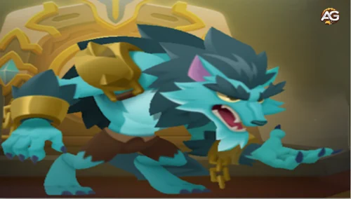

The Werewolf unit in Top Troops is a legendary melee fighter from the Wildling faction, renowned for its devastating abilities and adaptability in battle. Once maxed out, its skills make it a true juggernaut, capable of annihilating enemies, sustaining itself, and becoming increasingly dangerous as battles progress.
This guide will provide an in-depth look at its max-level stats, abilities, and strategic uses, offering tips to unleash the Werewolf's full potential.

Werewolf Unit in Top Troops, a game developed by Socialpoint.
Werewolf Stats Overview
Here’s a breakdown of the Werewolf’s max-level stats:
Stat
Value
Army Power
220.8k
Attack
23.35k
Attack Speed
0.99
Cooldown
6s
Critical Chance
0%
Critical Damage
x2
Range
1.5
Health Points
183,945
Defense
0%
Move Speed
4.2
Block Chance
0%
Life Steal
0.55%
With high attack damage, decent speed, and an excellent health pool, the Werewolf is a versatile and powerful melee unit that dominates in most team compositions.
The Werewolf’s Story: A Cursed Fighter
The Werewolf's backstory reveals its tragic origin. Cursed by the king's evil brother, the Werewolf was trapped in its beastly form. However, the intervention of the Elemental Witch saved it from darkness, giving the creature a second chance to fight for good.
Now, it uses its unparalleled strength, ferocity, and a sharp human mind to serve as a deadly ally on the battlefield.
Werewolf Skills and Max-Level Effects
The Werewolf’s abilities, when maxed out, make it one of the most lethal units in Top Troops. Below are its skills with their max-level effects and tips for using them effectively.
Bloody Claws (Main Skill)
Effect (Max Level): The Werewolf unleashes two powerful slashes in a radius of 2, dealing 50% of its attack damage per slash.
Cooldown: 6 seconds.
Battle Tips:
Position for Max Damage: Ensure the Werewolf is positioned near groups of enemies to maximize the impact of Bloody Claws’ area damage. It is particularly devastating against multi-population units like Goblin Swarms or Skeleton Hordes.
Gear Synergy: Focus on Attack-enhancing gear to amplify Bloody Claws’ output. Pair it with cooldown reduction gear to use this ability frequently.
Moonlight Glow
Effect (Max Level): The Werewolf heals for 100% of its attack damage each time it defeats an enemy.
Battle Tips:
Healing and Durability: This ability allows the Werewolf to sustain itself in extended fights. Target weaker units or multi-population enemies first to trigger frequent heals and stay alive longer.
Life Steal Gear: Equip Life Steal gear to complement Moonlight Glow, ensuring the Werewolf can recover health even when not securing kills.
Feral Instinct
Effect (Max Level): The Werewolf’s movement speed increases by 80%, enabling it to chase down enemies effortlessly.
Battle Tips:
Chase Key Targets: Use Feral Instinct to reach priority targets like healers, ranged units, or support enemies.
Cooldown Management: Equip Cooldown Reduction gear to ensure Feral Instinct can be used frequently, keeping the Werewolf mobile and dangerous.
Still Hungry
Effect (Max Level): Each enemy defeated by the Werewolf increases Bloody Claws’ damage by 40%, stacking with every kill.
Battle Tips:
Snowball Strategy: Engage weaker units or multi-population enemies first to quickly build up the bonus damage. This will make the Werewolf exponentially stronger as the fight progresses.
Synergize with Attack Speed talent: Pair with Attack Speed talents to defeat enemies faster and maximize Still Hungry’s bonus damage.
Gear Priority for the Werewolf
Equipping the right gear can significantly enhance the Werewolf’s performance. Here’s the optimal gear priority based on its max-level abilities:
Attack:
Boosts the raw damage of Bloody Claws and amplifies Moonlight Glow’s healing potential.
Move Speed:
Enhances Feral Instinct, allowing the Werewolf to engage and reposition more effectively.
Cooldown Reduction:
Reduces the downtime of all skills, enabling the Werewolf to unleash Bloody Claws and Feral Instinct more frequently.
Life Steal:
Increases sustainability, making the Werewolf a tanky threat even in prolonged battles.
Talent Priority for the Werewolf
The right talents can take the Werewolf’s performance to the next level. Here are the priorities:
Warewolf Melee Talent Tree, Top Troops.
Damage: Amplifies the power of Bloody Claws and Still Hungry, making the Werewolf a lethal offensive unit.
Attack Speed: Speeds up kill times, maximizing the benefits of Still Hungry and Moonlight Glow while also increasing the Werewolf's DPS.
Team Composition and Battle Strategies
Best Allies for the Werewolf
The Werewolf thrives when paired with supportive and synergistic units:
Frozen Bowman: Freezes enemies, allowing the Werewolf to unleash Bloody Claws without interruption.
Sekhmet: Heals and cast a shield around the Werewolf, ensuring it stays in the fight longer.
Elemental Witch: Provides area-of-effect damage and crowd control, complementing the Werewolf’s capabilities.
Counters and Matchups
Best Matchups: The Werewolf truly shines against multi-population units, particularly when these armies lack strong tanks in their frontline. Its area-of-effect damage allows it to quickly dismantle weaker enemies, snowballing its power as the battle progresses.
Weaknesses: The Werewolf struggles against high-defense units or enemies with high crowd-control potential. Use support units to counter these threats.
Final Thoughts
The Werewolf is a legendary unit that earns its reputation on the battlefield. Its powerful max-level skills, sustainability, and synergy with various team compositions make it an essential choice for any player aiming for victory in Top Troops. With the right strategy, gear, and talents, this Wildling beast will not only dominate battles but become a cornerstone of your army.
FAQs
What makes the Werewolf special in Top Troops?
The Werewolf’s unique combination of area damage, healing, and scaling power makes it a versatile and powerful melee unit.
How should I gear the Werewolf for maximum effectiveness?
Prioritize Attack and Movement Speed to boost damage and mobility. Cooldown Reduction and Life Steal gear further enhance its survivability and skill uptime.
What talents work best for the Werewolf?
Focus on Damage to amplify its raw power and Attack Speed to trigger skills like Moonlight Glow and Still Hungry faster.
What units pair well with the Werewolf?
Support units like the Fairy and crowd-control units like the Frost Mage are excellent allies for the Werewolf.
How can I counter enemies with the Werewolf?
Target multi-population units first to trigger skills like Moonlight Glow and Still Hungry. Use its mobility to chase down high-value targets like ranged enemies or healers.
Is the Werewolf worth upgrading to max level?
Absolutely! Its max-level abilities make it a fearsome addition to any team, capable of dominating most battles with ease.
Did you like our Werewolf Unit Guide for Top Troops? Is there something you didn't understand or would like to suggest changes to? We invite you to join our comment section on the Alexandre Games Blog page. Feel free to express your opinion, clarify your doubts, and share your suggestions. Click the button below to get started:


 Maman Brigitte Guide
Maman Brigitte Guide Frozen Bowman Guide - Top Troops
Frozen Bowman Guide - Top Troops Redeem Codes in Top Troops: Current Valid Exclusive Codes
Redeem Codes in Top Troops: Current Valid Exclusive Codes